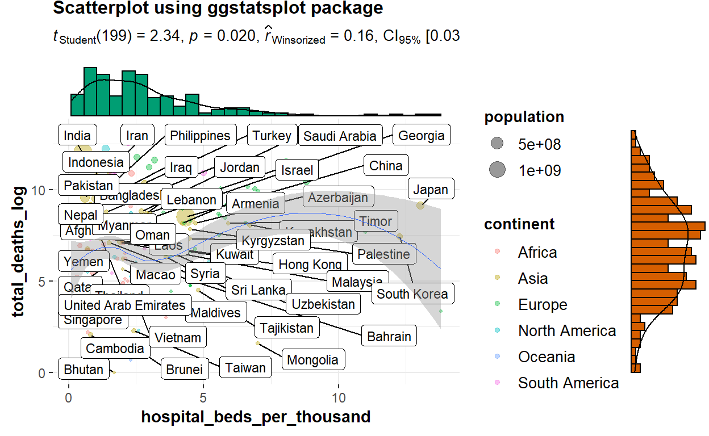
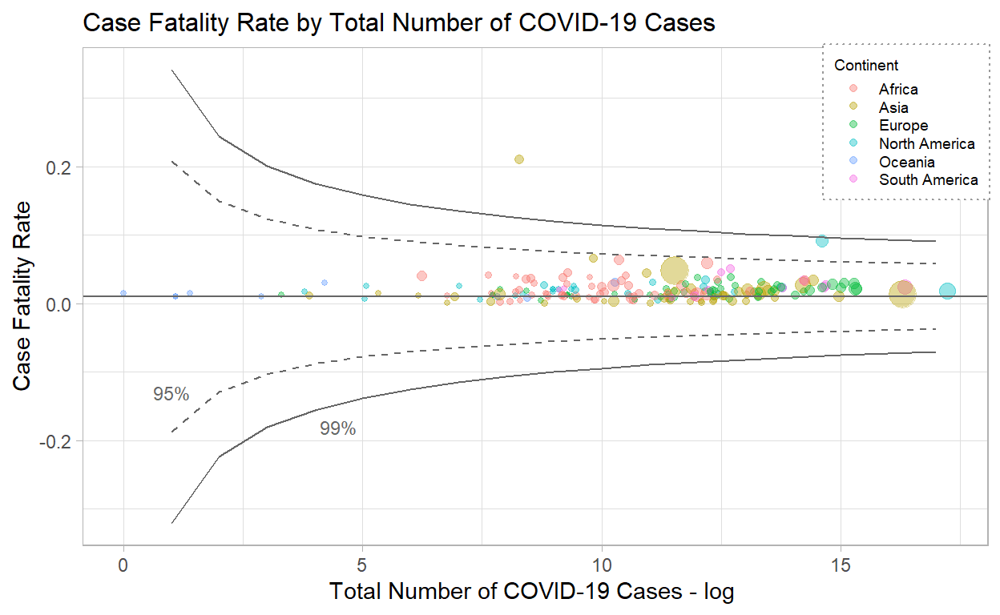

Overview
In December 2019, the Coronavirus (COVID-19) has caught the worlds attention with the first COVID-19 cases reported in Wuhan, Hubei, China. Since then, the virus has spread like wildfire across the globe, with countries struggling to contain the virus to curb further spread and resurgence.
Experts believe that COVID-19 is less deadly but more infectious than the Severe Acute Respiratory Syndrome (SARS) virus in 2003. Although the number of deaths due to COVID-19 reached a staggering 2.85 million worldwide, its case fatality ratio or rate (defined as the proportion of deaths among a defined population of interest, in this case, the number of COVID-19 cases) is estimated at 1.4% to 3.4%, a far cry from the 9.6% of SARS and 34.3% of the lesser known Middle East Respiratory Syndrome coronavirus (MERS-CoV). Of the 2.85 million deaths, how do countries compare against each other? This assignment aims to visualise the relationships between health, economic and population structure indicators with COVID-19 deaths across countries.
Literature review of current visualisations on COVID-19 deaths
Most visualisations report the death toll by location using geo-spatial, time-series and/or in tabular form (see Figure 1).
![Figure 1: Current visualisations on COVID-19 deaths. (a) Choropleth map of cumulative confirmed deaths per million people. Source: https://ourworldindata.org/covid-deaths (b) Proportional symbol map showing the case fatality ratio by location. Actual numbers are reported on the right side panel. Source: https://coronavirus.jhu.edu/map.html (c) Time-series of cumulative confirmed deaths per million people. Countries can be added or removed. Source: https://ourworldindata.org/covid-deaths (d) Table with horizontal bar charts and another time-series visualisation on the deaths reported per day. Source: https://pandemic.internationalsos.com/2019-ncov/covid-19-data-visualisation](images/currviz.jpg)
These visualisations focus on comparing countries based on the number of deaths or case fatality rates. Comparisons are made based on visual encodings such as colour and size of data points. When used appropriately, users are able to perceive the information effectively (Figure 1-a to c). We can see that there is a lot of visual clutter when more countries are added, as seen in the time-series graph in Figure 1-d.
More details on number of deaths for individual countries are also provided via interactivity in some visualisations (see Figure 1-c for example). However, the comparisons are limited to the countries selected and it could be challenging to make comparisons when more countries are added. On the other hand, the table provides a single-view of the details across countries in descending order, but the numbers could be overwhelming for users to process even with the horizontal bar charts. Furthermore, a tabular layout makes it difficult to compare specific countries of interest.
There are lesser analyses that compare deaths or case fatality with other indicators. Some analyses study the impact of COVID-19 on the indicators while others study the impact of the indicators on the COVID-19 numbers. The review will focus on the analysis or visualisations used, which can potentially be employed to both types of analyses.
Scatterplot of economic indicators against number of deaths per million

The scatterplot is useful in showing the relationship between two independent variables. In this scatterplot, size and colour scales are used to encode number of deaths and continent respectively. The size of the data points are not obvious from the graph due to the size range used, the 3-character country code labels and the choice of colour for Europe (the green stands out too much). The overlap in data points belonging to the same continent also make it difficult to identify the data points. There is no interactivity in this visualisation.
Funnel plot of case fatality rate against number of confirmed cases
There are two similar visualisations created specifically for COVID-19 case fatality rate for counties in the US by a SAS researcher Rick Wicklin (see Figure 3). Unlike the time-series, geo-spatial and tabular visualisations where users make comparisons based on the face-value of the numbers, the funnel plot seeks to highlight any anomalies from the expected range of the numerical values based on statistical concepts. Note that the factors plotted on a funnel plot are dependent on each other, i.e.the number of confirmed cases is used to calculate the case fatality rate.
The drawback of the visualisations is that the funnel plots are static with no interactivity: users are unable to identify the other data points that are not labelled by the author.
Tabular presentation of correlation index between socio-economic indicators and number of deaths per million
The study Rich at risk: socio-economic drivers of COVID-19 pandemic spread by Gangemi, S., Billeci, L. & Tonacci, A. (2020) seeks to understand the spread of the COVID-19 virus driven by socio-economic factors and long-distance transportations. The results are presented in a table (see Figure 4). Although the presentation of the results are not visually appealing, this study sheds light on the current analysis performed for COVID-19 deaths.

Scatterplot with fit line and regression model summary table to predict number of new deaths
The visualisations discussed thus far are bivariate in nature: analysis of each factor with the number of deaths. There are very few multivariate analysis done, and of those conducted, most of them are presented in tabular form or described in text. There is one study on regression models to predict the number of COVID-19 new deaths, which presents its findings visually in the research paper (see Figure 5).
Although the intention of the assignment is an exploratory analysis, we can still gain some insights from the visualisation used in this predictive regression analysis. It is noted that the regression models built are to predict the number of new deaths by day for a particular location, Ethiopia, solely based on COVID-19 related indicators. The scatterplot with fit lines allows users to visually compare the different regression models built. There is no interactivity in this graph as it is used for reporting purposes.
Suggested visualisations and R packages
There are gaps in the current visualisations in supporting the intended analysis of this assignment. The majority of interactive visualisations are univariate presented on maps or in time series, while the bivariate and multivariate analysis of the country indicators and the number of deaths are largely static.
In this assignment, we will attempt to create interactive visualisations for bivariate (scatterplot and funnel plot) and multivariate analysis (multiple linear regression) of the number of deaths due to COVID-19 with selected health-socio-economic indicators across countries. The focus will be on the cumulative or total number of deaths, so that more meaningful relationships can be observed between the COVID-19 related data and national aggregate indicators.
The following R packages will be explored:
| Visualisation | Packages |
|---|---|
| Scatterplot | ggstatsplot, car, ggplot |
| Funnel Plot | FunnelPlotR, funnelR, ggplot |
| Multivariate Analysis | olsrr |
| Interactivity | plotly |
Data preparation
All data extraction and wrangling are done in R using the tidyverse suite of packages.
Install and load all necessary packages
Besides the mentioned packages, the following packages are also loaded:
- mlr: for data exploration with
summarizeColumns() - naniar: for visualisation of missing values with
gg_miss_upset() - VIM: for imputation of missing values with
kNN() - gridExtra: for handling of multiple plots with
grid.arrange() - corrr: for visualisation of correlation with
correlate()andrplot() - ggExtra: for plotting of scatterplot with marginal distribution with
ggMarginal()
The code chunk below is used to install and load the packages.
packages = c('tidyverse', 'mlr', 'naniar','VIM', 'gridExtra', 'corrr',
'ggstatsplot', 'car', 'ggExtra',
'FunnelPlotR', 'funnelR',
'olsrr',
'plotly')
for(p in packages){
if(!require(p, character.only = T)){
install.packages(p)
}
library(p, character.only = T)
}
Import and extract relevant data
Data by country is obtained from various sources, as shown in the following table:
| Our World in Data (owid) | COVID-19 tests, positive rates, country to latitude-longitude coordinates mapping |
| John Hopkins University (JHU) | COVID-19 cases, deaths |
| World Bank | Population age structure, GDP per capita, poverty indicator |
| UNdata | Health expenditure, healthcare facilities and capacity indicators |
| United Nations Development Programme (UNDP) | Human Development Index (HDI), international inbound tourists |
The data is stored across eight files and read_csv() is used to import and extract the relevant columns from each file into R.
covid <- read_csv("./data/owid-covid-latest.csv",
col_types = cols_only(
"iso_code" = "c",
"continent" = "c",
"location" = "c",
"last_updated_date" = "D",
"total_cases" = "n",
"total_deaths" = "n",
"total_tests" = "n",
"positive_rate" = "n",
"test_units" = "c",
"population" = "n",
"population_density" = "n",
"gdp_per_capita" = "n",
"extreme_poverty" = "n",
"handwashing_facilities" = "n",
"hospital_beds_per_thousand" = "n",
"human_development_index" = "n"),
locale = locale(date_format = "%Y-%m-%d")
)
health_exp <- read_csv("./data/UNdata_HealthExpenditure.csv",
skip = 2,
col_names = c("region/country/area","year_exp","series","percentage"),
col_types = "_cncn__")
health_personnel <- read_csv("./data/UNdata_HealthPersonnel.csv",
skip = 2,
col_names = c("region/country/area","year_personnel","series","value"),
col_types = "_cncn__")
pop_prop <- list.files(path="./data/", pattern="WorldBank_PopProp_", full.names = TRUE) %>%
map_df(~read_csv(.,
skip = 4,
col_types = cols_only(
"Country Name" = "c",
"Indicator Name" = "c",
"2019" = "n")
)
)
intl_tourists <- read_csv("./data/UNDP_Intl_inbound_tourists_(thousands).csv",
skip = 6,
col_types = "_c________________________n_",
na = c("..")
)
geo_lookup <- read_csv("./data/UID_ISO_FIPS_LookUp_Table.csv",
col_types = "c_c_____nn__") %>%
filter(nchar(UID) <= 3) %>%
select(iso3, Lat, Long_) %>%
rename("lat" = "Lat", "long" = "Long_")
Wrangle and combine the data
Before combining the data frames into one main data frame for analysis, we need to explore and prepare each data frame.
# Population age structure data
pop_prop_cleaned <- pivot_wider(pop_prop, names_from = "Indicator Name", values_from = "2019") %>%
rename("0_to_14(%)" = "Population ages 0-14 (% of total population)",
"15_to_64(%)" = "Population ages 15-64 (% of total population)",
"65_and_above(%)" = "Population ages 65 and above (% of total population)")
# International inbound tourists arrival data
intl_tourists_cleaned <- rename(intl_tourists,
"annual_intl_arrivals_thousands" = "2011-2018")
# Number of physicians data
health_personnel_phy <- health_personnel %>%
group_by(`region/country/area`, `series`) %>%
slice(which.max(`year_personnel`)) %>%
filter(`series` == "Health personnel: Physicians (per 1000 population)") %>%
pivot_wider(names_from = "series", values_from = "value") %>%
rename("num_physicians_per_thousand" = "Health personnel: Physicians (per 1000 population)")
# Health expenditure data
health_exp_cleaned <- health_exp %>%
group_by(`region/country/area`, `series`) %>%
slice(which.max(`year_exp`)) %>%
pivot_wider(names_from = "series", values_from = "percentage") %>%
rename("current_health_exp_%gdp" = "Current health expenditure (% of GDP)",
"govt_health_exp_%totalgovtexp" = "Domestic general government health expenditure (% of total government expenditure)")
After cleaning the individual data frames, we can now combine and store the data in a single data frame, and drop any unnecessary columns for subsequent analysis.
covid_deaths <- covid %>%
left_join(pop_prop_cleaned, by = c("location" = "Country Name")) %>%
left_join(intl_tourists_cleaned, by=c("location" = "Country")) %>%
left_join(health_personnel_phy, by=c("location" = "region/country/area")) %>%
left_join(health_exp_cleaned, by=c("location" = "region/country/area")) %>%
left_join(geo_lookup, by=c("iso_code" = "iso3")) %>%
mutate(case_fatality_rate = total_deaths/total_cases) %>%
filter(!is.na(continent)) %>%
select(-c("iso_code","last_updated_date"))
As the data for number of physicians are taken across different years, the code chunk below extracts and presents the most recent year in which the number of physicians were available for each country.
personnel_data <- covid_deaths %>%
select(c("location", "year_personnel")) %>%
pivot_wider(names_from = "year_personnel",
values_from = "location",
names_sep = ", ")
glimpse(personnel_data[,order(colnames(personnel_data))])
Rows: 1
Columns: 9
$ `2010` <list> "Lesotho"
$ `2011` <list> <"Congo", "Dominican Republic", "Sierra Leone">
$ `2012` <list> "Marshall Islands"
$ `2014` <list> <"Azerbaijan", "Cambodia", "Djibouti", "Kazakhstan",~
$ `2015` <list> <"Andorra", "Bahrain", "Belarus", "Bosnia and Herzeg~
$ `2016` <list> <"Afghanistan", "Albania", "Botswana", "Cameroon", "~
$ `2017` <list> <"Angola", "Antigua and Barbuda", "Argentina", "Arme~
$ `2018` <list> <"Algeria", "Bangladesh", "Benin", "Bhutan", "Brazil~
$ `NA` <list> <"Anguilla", "Bermuda", "Bolivia", "Brunei", "Cape V~Next, we will reorder the columns to group similar variables.
col_order <- c("continent", "location",
"lat", "long",
"total_cases", "total_deaths", "case_fatality_rate", "total_tests", "positive_rate",
"hospital_beds_per_thousand", "num_physicians_per_thousand", "year_personnel", "handwashing_facilities",
"gdp_per_capita", "current_health_exp_%gdp", "govt_health_exp_%totalgovtexp",
"population", "population_density", "0_to_14(%)", "15_to_64(%)", "65_and_above(%)",
"extreme_poverty", "human_development_index",
"annual_intl_arrivals_thousands")
covid_deaths <- covid_deaths[, col_order] %>%
select(-c("year_personnel"))
glimpse(covid_deaths)
Rows: 202
Columns: 23
$ continent <chr> "Asia", "Europe", "Africa", ~
$ location <chr> "Afghanistan", "Albania", "A~
$ lat <dbl> 33.93911, 41.15330, 28.03390~
$ long <dbl> 67.709953, 20.168300, 1.6596~
$ total_cases <dbl> 56290, 123641, 116750, 11809~
$ total_deaths <dbl> 2469, 2204, 3077, 115, 533, ~
$ case_fatality_rate <dbl> 0.043862142, 0.017825802, 0.~
$ total_tests <dbl> NA, 517102, NA, 162071, NA, ~
$ positive_rate <dbl> NA, 0.173, NA, 0.094, NA, NA~
$ hospital_beds_per_thousand <dbl> 0.50, 2.89, 1.90, NA, NA, NA~
$ num_physicians_per_thousand <dbl> 2.78, 12.16, 17.19, 33.33, 2~
$ handwashing_facilities <dbl> 37.746, NA, 83.741, NA, 26.6~
$ gdp_per_capita <dbl> 1803.987, 11803.431, 13913.8~
$ `current_health_exp_%gdp` <dbl> 11.7772, NA, 6.3743, 10.3206~
$ `govt_health_exp_%totalgovtexp` <dbl> 2.3191, 14.6789, 10.7341, 14~
$ population <dbl> 38928341, 2877800, 43851043,~
$ population_density <dbl> 54.422, 104.871, 17.348, 163~
$ `0_to_14(%)` <dbl> 42.47227, 17.39956, 30.55038~
$ `15_to_64(%)` <dbl> 54.91193, 68.39781, 62.89684~
$ `65_and_above(%)` <dbl> 2.615794, 14.202631, 6.55277~
$ extreme_poverty <dbl> NA, 1.1, 0.5, NA, NA, NA, NA~
$ human_development_index <dbl> 0.511, 0.795, 0.748, 0.868, ~
$ annual_intl_arrivals_thousands <dbl> NA, 5340, 2657, 3042, 218, N~The base dataset is ready for the next step on data exploration. Before we move on to the next step, we will clear the R environment to free up memory space with the following code chunk:
Explore the data
Let us take a look at a summary of the data.
summarizeColumns(covid_deaths)
name type na mean
1 continent character 0 NA
2 location character 0 NA
3 lat numeric 3 1.985526e+01
4 long numeric 3 1.829348e+01
5 total_cases numeric 12 6.669787e+05
6 total_deaths numeric 22 1.542956e+04
7 case_fatality_rate numeric 22 2.056034e-02
8 total_tests numeric 96 1.406837e+07
9 positive_rate numeric 93 9.666972e-02
10 hospital_beds_per_thousand numeric 36 3.001072e+00
11 num_physicians_per_thousand numeric 36 1.933904e+01
12 handwashing_facilities numeric 108 5.016595e+01
13 gdp_per_capita numeric 16 1.925648e+04
14 current_health_exp_%gdp numeric 38 6.529712e+00
15 govt_health_exp_%totalgovtexp numeric 37 1.034586e+01
16 population numeric 1 3.859711e+07
17 population_density numeric 8 4.616417e+02
18 0_to_14(%) numeric 45 2.748499e+01
19 15_to_64(%) numeric 45 6.339277e+01
20 65_and_above(%) numeric 45 9.122235e+00
21 extreme_poverty numeric 78 1.396452e+01
22 human_development_index numeric 17 7.223892e-01
23 annual_intl_arrivals_thousands numeric 41 7.978099e+03
disp median mad min max
1 7.277228e-01 NA NA 9.000000e+00 5.500000e+01
2 9.950495e-01 NA NA 1.000000e+00 1.000000e+00
3 2.377412e+01 1.873570e+01 2.574145e+01 -4.090060e+01 6.496310e+01
4 6.269834e+01 1.937439e+01 4.091811e+01 -1.721046e+02 1.780650e+02
5 2.601232e+06 8.315900e+04 1.197807e+05 1.000000e+00 3.021868e+07
6 5.326492e+04 1.246000e+03 1.803583e+03 1.000000e+00 5.488280e+05
7 1.941648e-02 1.709511e-02 1.065804e-02 4.976115e-04 2.096246e-01
8 4.466199e+07 2.671796e+06 3.490331e+06 3.659700e+04 3.635135e+08
9 8.789104e-02 7.300000e-02 7.413000e-02 0.000000e+00 3.530000e-01
10 2.453240e+00 2.358500e+00 1.865852e+00 1.000000e-01 1.380000e+01
11 1.752972e+01 1.567500e+01 1.971858e+01 2.300000e-01 8.422000e+01
12 3.204417e+01 4.875300e+01 4.622524e+01 1.188000e+00 9.899900e+01
13 2.069661e+04 1.203878e+04 1.385404e+04 6.612400e+02 1.169356e+05
14 2.538743e+00 6.303600e+00 2.692402e+00 1.772700e+00 1.640290e+01
15 4.972039e+00 9.991500e+00 5.204964e+00 2.106200e+00 2.690710e+01
16 1.454664e+08 7.976985e+06 1.124365e+07 8.090000e+02 1.439324e+09
17 2.156326e+03 8.430400e+01 9.032740e+01 1.980000e+00 2.054677e+04
18 1.055023e+01 2.618512e+01 1.378944e+01 1.233150e+01 4.984217e+01
19 6.382057e+00 6.463752e+01 5.079144e+00 4.756112e+01 8.488094e+01
20 6.610569e+00 6.711584e+00 5.690908e+00 1.156549e+00 2.800205e+01
21 2.030972e+01 2.350000e+00 3.187590e+00 1.000000e-01 7.760000e+01
22 1.510628e-01 7.420000e-01 1.749468e-01 3.940000e-01 9.570000e-01
23 1.511262e+04 2.077000e+03 2.846592e+03 7.000000e+00 8.932200e+04
nlevs
1 6
2 202
3 0
4 0
5 0
6 0
7 0
8 0
9 0
10 0
11 0
12 0
13 0
14 0
15 0
16 0
17 0
18 0
19 0
20 0
21 0
22 0
23 0Note that there are a number of variables with missing values. As it is challenging to explore the data in numbers, we will employ visualisation to aid in data exploration in the following three areas:
- Missingness
- Distribution
- Outliers
- Correlation
Missingness
ggplot is used to visualise missing values in the dataset with the code chunk below:
missing_values <- covid_deaths %>%
gather(key = "key", value = "val") %>%
mutate(isna = is.na(val)) %>%
group_by(key) %>%
mutate(total = n()) %>%
group_by(key, total, isna) %>%
summarise(num.isna = n()) %>%
mutate(pct = num.isna / total * 100)
levels <- (missing_values %>%
filter(isna == TRUE) %>%
arrange(pct))$key
percentage_plot <- missing_values %>%
ggplot() +
geom_bar(aes(x = reorder(key, pct), y = pct, fill=isna),
stat = "identity",
alpha=0.8) +
scale_x_discrete(limits = levels) +
scale_fill_manual(name = "",
values = c("lightblue","rosybrown"),
labels = c("Present", "Missing")) +
coord_flip() +
labs(title = "Percentage of missing values", x = 'Variable', y = "% of missing values")
percentage_plot

From the above plot, handwashing facilities has the highest percentage of missing values, followed by total tests and positive rate. We can also use gg_miss_upset plot to understand how missing values are linked across variables.
gg_miss_upset(covid_deaths,
nsets = n_var_miss(covid_deaths),
nintersects = NA,
text.scale = c(1,1,1,1,0.8,1),
# intersection title, intersection tick labels, set title, set tick labels, set names, numbers above bars
set_size.show = TRUE,
set_size.numbers_size = 4)

From the UpSet plot, 35 of the records have only missing values in handwashing facilities, while there is one record with missing values across all variables. As the missing values would pose a problem later in the analysis, the missing values are imputed using the k-Nearest Neighbour (kNN) imputation, where k = 5. Key indicators of a country, such as the population, population density and Gross Domestic Product (GDP) per capita are used to estimate the imputation value. The continent in which the country falls under is also considered.
covid_deaths_imputed_raw <- covid_deaths %>%
drop_na(population) %>%
kNN(k=5,
dist_var = c("continent",
"population",
"population_density",
"gdp_per_capita"))
covid_deaths_imputed <- covid_deaths_imputed_raw %>%
select(continent:annual_intl_arrivals_thousands)
summarizeColumns(covid_deaths_imputed)
name type na mean
1 continent character 0 NA
2 location character 0 NA
3 lat numeric 0 1.985788e+01
4 long numeric 0 1.822086e+01
5 total_cases numeric 0 6.328611e+05
6 total_deaths numeric 0 1.386159e+04
7 case_fatality_rate numeric 0 1.982965e-02
8 total_tests numeric 0 8.502279e+06
9 positive_rate numeric 0 9.246269e-02
10 hospital_beds_per_thousand numeric 0 2.871771e+00
11 num_physicians_per_thousand numeric 0 1.971324e+01
12 handwashing_facilities numeric 0 6.708867e+01
13 gdp_per_capita numeric 0 2.003516e+04
14 current_health_exp_%gdp numeric 0 6.474225e+00
15 govt_health_exp_%totalgovtexp numeric 0 1.026984e+01
16 population numeric 0 3.859711e+07
17 population_density numeric 0 4.555706e+02
18 0_to_14(%) numeric 0 2.685172e+01
19 15_to_64(%) numeric 0 6.380348e+01
20 65_and_above(%) numeric 0 9.262033e+00
21 extreme_poverty numeric 0 1.141692e+01
22 human_development_index numeric 0 7.293433e-01
23 annual_intl_arrivals_thousands numeric 0 7.349433e+03
disp median mad min max
1 7.263682e-01 NA NA 9.000000e+00 5.500000e+01
2 9.950249e-01 NA NA 1.000000e+00 1.000000e+00
3 2.365768e+01 1.873570e+01 2.550339e+01 -4.090060e+01 6.496310e+01
4 6.238846e+01 1.914510e+01 4.057817e+01 -1.721046e+02 1.780650e+02
5 2.532741e+06 6.701100e+04 9.632304e+04 1.000000e+00 3.021868e+07
6 5.060132e+04 8.600000e+02 1.232041e+03 1.000000e+00 5.488280e+05
7 1.857345e-02 1.658023e-02 9.050984e-03 4.976115e-04 2.096246e-01
8 3.309407e+07 1.763959e+06 1.961999e+06 3.659700e+04 3.635135e+08
9 7.905915e-02 7.300000e-02 6.375180e-02 0.000000e+00 3.530000e-01
10 2.310520e+00 2.397000e+00 1.922932e+00 1.000000e-01 1.380000e+01
11 1.659314e+01 2.007000e+01 1.965928e+01 2.300000e-01 8.422000e+01
12 3.120329e+01 8.324100e+01 2.064224e+01 1.188000e+00 9.899900e+01
13 2.080873e+04 1.295184e+04 1.497528e+04 6.612400e+02 1.169356e+05
14 2.394534e+00 6.229800e+00 2.496550e+00 1.772700e+00 1.640290e+01
15 4.720623e+00 9.775500e+00 5.179315e+00 2.106200e+00 2.690710e+01
16 1.454664e+08 7.976985e+06 1.124365e+07 8.090000e+02 1.439324e+09
17 2.118683e+03 8.812500e+01 9.465363e+01 1.980000e+00 2.054677e+04
18 1.026416e+01 2.486598e+01 1.255024e+01 1.233150e+01 4.984217e+01
19 6.253606e+00 6.470614e+01 4.298276e+00 4.756112e+01 8.488094e+01
20 6.607673e+00 7.273292e+00 6.413068e+00 1.156549e+00 2.800205e+01
21 1.823734e+01 2.000000e+00 2.668680e+00 1.000000e-01 7.760000e+01
22 1.523789e-01 7.560000e-01 1.808772e-01 3.940000e-01 9.570000e-01
23 1.385114e+04 1.781000e+03 2.429981e+03 7.000000e+00 8.932200e+04
nlevs
1 6
2 201
3 0
4 0
5 0
6 0
7 0
8 0
9 0
10 0
11 0
12 0
13 0
14 0
15 0
16 0
17 0
18 0
19 0
20 0
21 0
22 0
23 0There are no missing values after imputation as seen from the na column, and no zero values were imputed when compared to the previous summary table from the min column.
Distribution
The distributions are examined from the density curves of the variables using ggplot(). Let us compare the variable distributions before and after imputation.
check_distribution <- covid_deaths %>%
pivot_longer(cols = total_cases:annual_intl_arrivals_thousands,
names_to = "variable",
values_to = "value") %>%
ggplot(aes(x=value)) +
geom_density() +
facet_wrap(~variable, nrow = 5, ncol = 4, scales = "free") +
ggtitle("Distribution before imputation") +
theme_minimal() +
theme(panel.border = element_rect(colour="grey60", fill = NA),
strip.background = element_rect(fill = "grey80"))
check_distribution_imputed <- covid_deaths_imputed %>%
pivot_longer(cols = total_cases:annual_intl_arrivals_thousands,
names_to = "variable",
values_to = "value") %>%
ggplot(aes(x=value)) +
geom_density() +
facet_wrap(~variable, nrow = 5, ncol = 4, scales = "free") +
ggtitle("Distribution after imputation") +
theme_minimal() +
theme(panel.border = element_rect(colour="grey60", fill = NA),
strip.background = element_rect(fill = "grey80"))
The distributions after imputation is similar to that before imputation, except for handwashing_facilities as it has the most missing values.
From the above distributions, we can see that the range of values differ greatly between groups of variables, which may result in issues at a later stage. We will rescale some of the data with large ranges by performing a log transformation. No variables were removed, as the transformed variables will only be used where appropriate, i.e.in regression analysis.
covid_deaths_tidy <- covid_deaths_imputed %>%
mutate(total_cases_log = log(total_cases),
total_deaths_log = log(total_deaths),
total_tests_log = log(total_tests),
gdp_per_capita_log = log(gdp_per_capita),
population_log = log(population),
population_density_log = log(population_density),
annual_intl_arrivals_thou_log = log(annual_intl_arrivals_thousands)
)
check_distribution_tidy <- covid_deaths_tidy %>%
pivot_longer(cols = total_cases:total_tests_log,
names_to = "variable",
values_to = "value") %>%
ggplot(aes(x=value)) +
geom_density() +
facet_wrap(~variable, nrow = 5, ncol = 5, scales = "free") +
ggtitle("Distribution after transformation") +
theme_minimal() +
theme(panel.border = element_rect(colour="grey60", fill = NA),
strip.background = element_rect(fill = "grey80"))
check_distribution_tidy
The distributions of the log-transformed variables now approximates to the normal distribution.
Outliers
The outliers are also examined using ggplot().
check_outlier <- covid_deaths_tidy %>%
pivot_longer(cols = total_cases:annual_intl_arrivals_thou_log,
names_to = "variable",
values_to = "value") %>%
ggplot(aes(x=variable, y=value)) +
geom_boxplot() +
facet_wrap(~variable, ncol = 7, scales = "free") +
theme_minimal() +
theme(panel.border = element_rect(colour="grey60", fill = NA),
axis.text.x.bottom = element_blank())
check_outlier

Most of the outliers are valid as there are countries with very large numbers due to its population sizes and land area.
Correlation
Correlation between the variables is calculated with the below code chunk.
check_correlation <- correlate(covid_deaths_tidy %>%
select(total_cases:annual_intl_arrivals_thou_log))
rplot(check_correlation,
print_cor = TRUE) +
scale_size_continuous(range = c(0,4)) +
theme(axis.text.x = element_text(size=7, angle=45, hjust=0.95),
axis.text.y = element_text(size=7))
We observe that total_cases and total_deaths are strongly positively-correlated, as they are logically inter-dependent. human_development_index is strongly positively-correlated with handwashing_facilities and gdp_per_capita, and strongly negatively-correlated with 0_to_14(%). The explanation for the correlation between the Human Development Index (HDI) with GDP per capita and age group below 14 years can be found in the definition of the HDI, which is a summary measure of four indicators: (1) life expectancy; (2) expected years of schooling; (3) mean of years of schooling; and (4) gross national income per capita.
An interesting correlation is that between 0_to_14(%) and 64_and_above(%), with correlation at -0.80.
No further action is taken to handle variables with high correlation values (>= 0.80) as this is an exploratory analysis.
Prototype
The next step would be to explore the packages to build the needed plots. When there are more than one package, the criteria to evaluate the plots are:
- Level of customisation available
- Ease of use and implementation of customisation in functions
- Ease of understanding and interpretation of the plot (clarity and aesthetic)
- Interactivity
There are mainly two types of interactivity to consider: (1) able to render plot object interactive; and (2) degree to which users can interact with the plot via changing the plot arguments in a Shiny app, with the least complexity in the code.
Scatterplot
Two packages ggstatsplot and car will be explored for the scatterplot.
Using ggstatsplot::ggscatterstats
The ggstatsplot package is an extension of the ggplot package, making it easier to tie in with other functions from the tidyverse family. ggplot functions can be called within ggscatterstats(), but the output of the function is not further modifiable with ggplot unless the marginal distributions are not plotted.
There are several key arguments that can be provided for user customisation:
type: statistical test to be performed (parametric, non-parametric, robust and bayesian)conf.level: confidence level (value between 0 to 1)results.subtitle: option to display statistical testlabel.arguments: set label parameters and criteria for displaypoint.args: customisation to the point plotmarginal.type: type of marginal distribution (histogram, density, densigram, boxplot and violin plot)- Under
ggplot.component: Smooth line to display (from geom_smooth: loess, lm, glm and gam) - Other aesthetic components such as graph title, axes scale etc.
The code chunk below generates a scatterplot of total deaths by hospital beds per thousand. We set some aesthetics for the points, which are coloured by continent and the size reflects the population number. Here, we use total_deaths_log to obtain a more proportionate graph.
sp_ggstatsplot_marginal <-
ggscatterstats(covid_deaths_tidy,
x = hospital_beds_per_thousand, # independent variable
y = total_deaths_log, # dependent variable
type = "robust", # statistical test
conf.level = 0.95, # confidence level
results.subtitle = TRUE, # set to FALSE to NOT display the statistical tests
ggplot.component = list(geom_smooth(method = "loess", size =0.05)), # regression line
label.var = location, # define label to show location
label.expression = continent == "Asia", # criteria to display labels
point.args = list(aes(colour=continent, # set colour scale for points
size=population), # set size scale for points
alpha = 0.4), # set size scale for point
smooth.line.args = list(color = NA,
se = FALSE), # remove default regression line
#marginal.type = "densigram", # marginal distribution
title = "Scatterplot using ggstatsplot package") # graph title
sp_ggstatsplot_marginal

The output plots a scatterplot with marginal distribution, with the default set as densigram, a combination of density curve and histogram. The marginal distributions provides useful information on the distribution, spread, and outliers of the x and y variables.
Using car::scatterplot
The car package uses basic R graphics to generate the scatterplot. The key arguments selected for customisation are:
boxplot: axis to display marginal boxplot (x, y, xy)regLine: regression line to display (lm, loess, mgcv::gam, quantreg::rqss)id: criteria and number of points to display labelsellipse: add ellipse (to use cov.trob function in the MASS package or not, CI of ellipse)smooth: Smooth line to display (loessLine, gamline, quantregLine)- Other aesthetic components such as graph title, axis labels, axes scale, shape etc.
A scatterplot() implementation of the same plot is shown below. Again, total_deaths_log is used to obtain a proportionate graph.
sp_car <- scatterplot(total_deaths_log ~ hospital_beds_per_thousand | continent, # group by continent
covid_deaths_tidy,
boxplots = "xy", # axis for marginal boxplot
regLine = list(method=lm, # regression line to display and customisation
lty=1,
lwd=1),
id = list(method="mahal", n=5), # label customisation
ellipse = list(levels=c(.5, .95), # ellipse customisation
robust=TRUE,
fill=TRUE,
fill.alpha=0.2),
smooth = list(smoother=loessLine, # smooth line to display and customisation
lty.var=2,
lwd.var=0.5),
by.groups = TRUE, # unable to change to FALSE when group is defined
xlab = "hospital beds per thousand", # x-axis label
ylab = "total deaths", # y-axis label
main = "Scatterplot using car package" # graph title
)
The grouping by continent results in individual regression lines, ellipses and smooth lines to be plotted for each continent group.
Evaluation
Level of customisation and ease of use
Both packages allow for a wide variety of options for customisation, with car::scatterplot having an added feature of plotting ellipses. For ggstatsplot::ggscatterstats, most ggplot functions such as geom_smooth and scale_ functions are supported, which makes it fairly easy to implement for someone with basic knowledge of ggplot.
There are some limitations to the arguments in car::scatterplot, such as the marginal distribution is limited to the boxplot and the display of data labels is limited to the values. In addition, it is not straightforward to make changes to the arguments due to the many hidden lists within the arguments.
Clarity and aesthetic
The statistical test in the ggstatsplot::ggscatterstats scatterplot is informative to the more statistically inclined, with an option to turn off the statistical results for the non-statistically inclined. The graph is also visually appealing with the default settings for position, colour and data point opacity, thus little customisation to the aesthetics need to be done.
On the other hand, the scatterplot from car::scatterplot is visually overwhelming when groups are defined. The plots by group cannot be turned off by setting the argument by.groups to FALSE. In addition, the shape scale is automatically added which adds visual clutter to the plot. There is a need to explicitly amend pch to standardise the shape. The location of the marginal boxplot is near the axes labels at the bottom and left of plot, which does not give attention to the marginal boxplots.
In general, the scatterplot created using the car package is not as visually appealing than that from the ggstatsplot package, and requires more customisation to improve the clarity and aesthetics.
Interactivity
There is no support for plot interactivity for both packages, despite claims from the authors of ggstatplot that the functions in the package are compatible with the plotly package, a package for rendering interactive graphics.
Another option is to build the scatterplot from scratch using ggplot(), which can be passed into ggplotly() to make the plot interactive. The marginal distributions are added to the base ggplot using ggMarginal() from the ggExtra package.
# base ggplot
sp_ggplot_base <- ggplot(covid_deaths_tidy,
aes(x=hospital_beds_per_thousand, y=total_deaths_log, size=population)) +
geom_point(aes(colour=continent)) +
ggtitle("ggplot Scatterplot") +
xlab("hospital beds per thousand") +
ylab("total deaths") +
geom_smooth(method = "loess") +
theme(legend.position = "none")
# ggplot with marginal distribution
sp_ggplot_marginal <- ggMarginal(sp_ggplot_base,
type="histogram",
fill="lightblue")
combine_plots(plotlist = list(sp_ggplot_base,
sp_ggplot_marginal),
annotation.args = list(title="ggplot_base and ggplot_marginal"),
plotgrid.args = list(nrow=1))

The marginal distribution can also be customised.
The code chunk below generates an interactive scatterplot.
# interactive base ggplot
sp_ggplotly_base <- ggplotly(sp_ggplot_base)
sp_ggplotly_base
However, an error message is encountered when rendering the plot with marginal distributions.
ggplotly(sp_ggplot_marginal)
Error in UseMethod("ggplotly", p) : no applicable method for 'ggplotly' applied
to an object of class "c('ggExtraPlot', 'gtable', 'gTree', 'grob', 'gDesc')"From the angle of providing interactivity on the Shiny app, the arguments in the ggscatterstats() functions can mostly be manipulated at the first level, whereas the scatterplot() function utilises lists embedded in its arguments for more customisations e.g.smooth = list(smoother=loessLine,lty.var=2, lwd.var=0.5). This makes the former easier to code parameters to be passed into the function as arguments in the Shiny app. The same goes for the ggplot() function.
Conclusion
As the aim of the assignment is for users to explore and compare the number of COVID-19 deaths across countries, interactivity is an important consideration, which is provided by ggplot. The trade-off is the lost of information provided by the statistical tests and marginal distributions.
ggscatterstats() provide a nice visualisation with statistical analysis, and is able to sufficiently provide customisation for the user to interact with in a Shiny app. However, it is not supported by existing packages that renders interactive graphics. The key purpose of providing interactivity here is to allow users to compare and discover patterns between countries, and this would be achieved mainly through the identification of locations in a scatterplot with many data points. An alternative to the desired interactivity would be to provide options for users to select countries or continent to display static labels on the graph. As such, ggscatterstats() is chosen as the function to plot the scatterplot in the final product.
Funnel Plot
Two packages FunnelPlotR and funnelR will be explored to plot a funnel plot of case fatality rate (defined as the total number of deaths divided by the total number of cases) against total number of cases. Other rates can possibly be plotted using the funnel plot, which can be provided by options for user to select in the Shiny app.
Using FunnelPlotR::funnel_plot
The FunnelPlotR package uses ggplot to generate funnel plots. It requires a numerator (events of interest), denominator (population to be considered) and group. The key arguments selected for customisation are:
limit: plot limits (95 or 99)label_outliers: to label outliers (true or false)Poisson_limits: to add Poisson limits to the plotOD_adjust: to add overdispersed limits to the plotxrangeandyrange: to specify the range to display for axes, acts like a zoom function- Other aesthetic components such as graph title, axis labels etc.
The code chunk below plots a funnel plot. Two points to note here:
groupin this function is different from the scatterplot. Here, it defines the level of the points to be plotted i.e.location or continent. If continent is chosen, there are only six data points.
- There are no arguments available to customise the funnel plot using ggplot functions
fp_funnelplotR <- funnel_plot(numerator = covid_deaths_tidy$total_deaths, # dependent variable
denominator = covid_deaths_tidy$total_cases, # independent variable
group = covid_deaths_tidy$location, # level of plotted points
data_type = "PR", # to plot proportions
limit = 99, # define CI limits
label_outliers = TRUE, # to label outliers
Poisson_limits = TRUE, # to show Poisson limits
OD_adjust = TRUE, # to show overdispersion limits
title = "Case Fatality Rate by Total Number of COVID-19 Cases",
x_label = "Total Number of COVID-19 Cases",
y_label = "Case Fatality Rate",
xrange = c(0, 32000000), # to change x-axis range
yrange = c(0, 0.25)) # to change y-axis range
fp_funnelplotR

A funnel plot object with 201 points of which 59 are outliers.
Plot is adjusted for overdispersion. The above plot is highly skewed due to the presence of outliers in the data.
class(fp_funnelplotR)
[1] "funnelplot"As the output is a funnelplot object, it cannot be passed to ggplotly to render the plot interactive so as to allow user to take a closer look at the plot area with high concentration of data points. We can change xrange and yrange to zoom-in on the cluster of points, with the following code chunk.
fp_funnelplotR_zoom <- funnel_plot(numerator = covid_deaths_tidy$total_deaths, # dependent variable
denominator = covid_deaths_tidy$total_cases, # independent variable
group = covid_deaths_tidy$location, # level of plotted points
data_type = "PR", # to plot proportions
limit = 99, # define CI limits
label_outliers = TRUE, # to label outliers
Poisson_limits = TRUE, # to show Poisson limits
OD_adjust = TRUE, # to show overdispersion limits
title = "Case Fatality Rate by Total Number of COVID-19 Cases",
x_label = "Total Number of COVID-19 Cases",
y_label = "Case Fatality Rate",
xrange = c(0, 10000), # to change x-axis range
yrange = c(0, 0.05)) # to change y-axis range
fp_funnelplotR_zoom
A funnel plot object with 201 points of which 59 are outliers.
Plot is adjusted for overdispersion. Zoom control can be provided to users by allowing users to change the xrange and yrange or via a button that changes the values by a fix amount.
An alternative will be to use the log transformed variables. This is proposed as the scale of the graph axes cannot be changed to a log scale explicitly in the arguments.
fp_funnelplotR_log <- funnel_plot(numerator = covid_deaths_tidy$total_deaths_log, # dependent variable
denominator = covid_deaths_tidy$total_cases_log, # independent variable
group = covid_deaths_tidy$location, # level of plotted points
data_type = "PR", # to plot proportions
limit = 99, # define CI limits
label_outliers = TRUE, # to label outliers
Poisson_limits = TRUE, # to show Poisson limits
OD_adjust = TRUE, # to show overdispersion limits
title = "Case Fatality Rate by Total Number of COVID-19 Cases",
x_label = "Total Number of COVID-19 Cases - log",
y_label = "Case Fatality Rate",
xrange = c(0, 20), # to change x-axis range
yrange = c(-2.5, 10) # to change y-axis range
)
fp_funnelplotR_log

A funnel plot object with 201 points of which 3 are outliers.
Plot is not adjusted for overdispersion. The scale on the x-axis is shorter now, but there is a point that has an extremely large case_fatality_rate value as seen from the top left corner of the plot area. We can also zoom-in on the cluster of points.
fp_funnelplotR_log_zoom <- funnel_plot(numerator = covid_deaths_tidy$total_deaths_log, # dependent variable
denominator = covid_deaths_tidy$total_cases_log, # independent variable
group = covid_deaths_tidy$location, # level of plotted points
data_type = "PR", # to plot proportions
limit = 99, # define CI limits
label_outliers = TRUE, # to label outliers
Poisson_limits = TRUE, # to show Poisson limits
OD_adjust = TRUE, # to show overdispersion limits
title = "Case Fatality Rate by Total Number of COVID-19 Cases",
x_label = "Total Number of COVID-19 Cases - log",
y_label = "Case Fatality Rate",
xrange = c(0, 18), # to change x-axis range
yrange = c(-0.5, 2) # to change y-axis range
)
fp_funnelplotR_log_zoom

A funnel plot object with 201 points of which 3 are outliers.
Plot is not adjusted for overdispersion. A checkbox can be provided to the user to select whether to use log transformation in the plot.
Using funnelR::funplot
The funnelR package plots funnel plot using a simple two-step process: (1) calculate limits with fundata(); and (2) plot the funnel plot with funplot(). It requires specifically for the numerator to be named n and the denominator to be named d in the data frame.
The key arguments that are available for customisation are:
alphaandalpha2: confidence interval limitsmethod: specify the confidence interval limits smoothing (exact, approximate)
There are no arguments within the function to customise the graph e.g.axes range and labels, opacity and size of points, title and legend.
Let us plot the funnel plot. As the value of the untransformed variable is too large, thus resulting in runtime error, we will plot based on the log-transformed variables instead.
# Rename variables
covid_deaths_fR_log <- covid_deaths_tidy %>%
rename(n = total_deaths_log, d = total_cases_log)
funnelR_limits <- fundata(input = covid_deaths_fR_log,
alpha = 0.95, # to define first limits
alpha2 = 0.998, # to define second limits (optional)
method = 'approximate') # to define limits smoothing
fp_funnelR_log <- funplot(covid_deaths_fR_log, funnelR_limits, "continent")
fp_funnelR_log
The data points are now more spread out across the plot area, however there are some data points that are cut off towards the top left corner of the graph. As funplot() returns a ggplot object, the funnel plot can be passed into ggplotly to render an interactive graphic.
fp_funnelR_log_ggplotly <- ggplotly(fp_funnelR_log)
fp_funnelR_log_ggplotly
With the interactive graph, we can pan to see the data points that were cut off.
Drawing from scratch using ggplot
To plot the funnel plot from scratch, the control limits needs to be calculated and overlaid on the base point plot. Similar to funnelR, runtime error is encountered when using the untransformed variables to plot the funnel plot using ggplot. Therefore, the log-transformed variables are also used here.
# case_fatality rate is used directly as it is the same value as dividing the log-transformed deaths by cases
rate <- covid_deaths_tidy$case_fatality_rate
number <- covid_deaths_tidy$total_cases_log
rate.se <- sqrt((rate*(1-rate)) / (number))
df <- data.frame(rate, number, rate.se)
# Calculate common effect (fixed effect model)
rate.fem <- weighted.mean(rate, 1/rate.se^2)
# Calculate lower and upper limits for 95% and 99.9% CI
number.seq <- seq(1, max(number), 1)
number.ll95 <- rate.fem - 1.96 * sqrt((rate.fem*(1-rate.fem)) / (number.seq))
number.ul95 <- rate.fem + 1.96 * sqrt((rate.fem*(1-rate.fem)) / (number.seq))
number.ll999 <- rate.fem - 3.29 * sqrt((rate.fem*(1-rate.fem)) / (number.seq))
number.ul999 <- rate.fem + 3.29 * sqrt((rate.fem*(1-rate.fem)) / (number.seq))
dfCI <- data.frame(number.ll95, number.ul95, number.ll999, number.ul999, number.seq, rate.fem)
# Draw funnel plot
fp_ggplot <- ggplot(covid_deaths_tidy,
aes(x = total_cases_log, y = case_fatality_rate)) +
geom_point(aes(colour=continent, # add colour aesthetic
size=population, # add size aesthetic
label=location), # add label aesthetic
alpha=0.4) +
geom_line(data = dfCI, aes(x = number.seq, y = number.ll95),
size = 0.4, colour = "grey40", linetype = "dashed") +
geom_line(data = dfCI, aes(x = number.seq, y = number.ul95),
size = 0.4, colour = "grey40", linetype = "dashed") +
geom_line(data = dfCI, aes(x = number.seq, y = number.ll999),
size = 0.4, colour = "grey40") +
geom_line(data = dfCI, aes(x = number.seq, y = number.ul999),
size = 0.4, colour = "grey40") +
geom_hline(data = dfCI, aes(yintercept = rate.fem),
size = 0.4, colour = "grey40") +
annotate("text", x = 1, y = -0.13, label = "95%", size = 3, colour = "grey40") + # label 95% CI
annotate("text", x = 4.5, y = -0.18, label = "99%", size = 3, colour = "grey40") + # label 99% CI
ggtitle("Case Fatality Rate by Total Number of COVID-19 Cases") +
xlab("Total Number of COVID-19 Cases - log ") +
ylab("Case Fatality Rate") +
theme_light() +
theme(plot.title = element_text(size=12),
legend.position = c(0.91,0.85), # place legend within the plot area
legend.title = element_text(size=7),
legend.text = element_text(size=7),
legend.background = element_rect(colour = "grey60", linetype = "dotted"),
legend.key.height = unit(0.3, "cm")) +
scale_size_continuous(guide = FALSE) + # remove size legend
scale_colour_discrete(name ="Continent") # rename colour legend title
fp_ggplot

The graph can be made interactive with ggplotly().
fp_ggplotly <- ggplotly(fp_ggplot,
tooltip = c("colour", "label", "x", "y"))
fp_ggplotly
Note that the legend position and theme were not retained within the plot area for the plotly object.
Evaluation
Level of customisation and ease of use
Both FunnelPlotR and funnelR packages are easy to use. There are limited arguments that can be passed into the functions for both packages, with FunnelPlotR offering slightly more customisation e.g.able to indicate control limits to be plotted. However, one key point to note for FunnelPlotR is that vectors have to be passed in the numerator, denominator and group arguments, and there is no argument to take in a dataframe. This means that there is limited customisation that can be done to the plot to make it more informative.
On the other hand, drawing from scratch with ggplot is relatively straightforward once the control limits are calculated, and offers the most customisation.
Clarity and aesthetic
The funnel plot from FunnelPlotR provides more information (and thus clarity) than that from funnelR. As mentioned earlier, the function from funnelR does not allow customisation to improve the clarity and aesthetics of the graph, which is the reason for not choosing it for the final product.
Between FunnelPlotR and ggplot, the former allows plotting of control limits based on the Poisson distribution, and the latter provides more information i.e.colour by continent and size by population numbers.
Interactivity
Unlike the scatterplot, the interactive plot value-adds to the exploration analysis, and thus plays a crucial factor in the evaluation of the graphs. FunnelPlotR does not return a ggplot object, whereas both funnelR and ggplot returns a ggplot object. As such, the funnel plots from funnelR and ggplot can be made interactive after passing the ggplot object through ggplotly().
Generally, the arguments in all three functions are straightforward to use and there are limited parameters in FunnelPlotR and funnelR that can be coded and passed as arguments into the functions.
Conclusion
Although FunnelPlotR is relatively easy to use, the function does not allow for more customisation due to its limitation of only taking in vectors for the key variables. In addition, it cannot be rendered into an interactive graphic. As such, ggplot() is chosen to create the funnel plot in the final product.
Adding a distribution plot to the funnel plot
We will also explore if it is possible to add a distribution plot, e.g.histogram or densigram, to the funnel plot. This is similar to the concept of the scatterplot with marginal distributions, whereby the intention is to inform users whether the rates plotted on the funnel plot are normally distributed. For simplicity, users will not be able to choose the type of chart to display the distribution.
The code chunk below plots the distribution plot using ggplot. The densigram is selected as the combination of the density curve and histogram can clearly show the distribution. Note that all non-data elements are removed, as it is not necessary to show them when combined with the funnel plot.
fp_densigram <- ggplot(covid_deaths_tidy, aes(x = case_fatality_rate)) +
geom_histogram(bins = 40, fill="orange", colour="grey40") +
geom_density(colour="grey40", size=0.8) +
coord_flip(xlim = c(-0.2,0.2), clip = "off") +
ggtitle("Distribution") +
theme_void() +
theme(axis.line = element_line(colour = "white"), # to remove x-axis line in subplot()
panel.grid = element_line(colour = "white")) # to remove panel grid lines in subplot()
fp_densigram
Next, subplot() from the plotly package can be directly called to combine the two ggplots into one plotly object. The call is simple and provides flexibility in arranging the plots, as compared to other packages such as gridExtra.
subplot(fp_ggplot, fp_densigram,
nrows = 1,
widths = c(3/4,1/4), # define the proportion of space taken up by the two plots
shareY = TRUE, # align the y-axis between the two graphs
which_layout = 1) # adopt the layout of the main funnel plot
The plotly object allows for synchronised interactivity across the two plots, which improves clarity during data exploration. The output looks acceptable, even though the legend position and theme was not as initially designed. This will be the funnel plot that will be used in the final product!
Multivariate analysis
The main analysis to explore in multivariate analysis is exploratory multiple linear regression (MLR). This assignment will explore the olsrr package in supporting and visualising MLR analysis.
There are two main parts to the olsrr package:
- Model building
- Least squares regression
- Variable selection methods
- Model diagnostics
- Model fit
- Residual Diagnostics
- Measure of influence
- Heteroskedasticity
- Collinearity
Model Building
MLR models can be built with two methods:
ols_regress()based on least squares regression- base R
lm()and pass the model into the variable selection method functions
Least squares regression
The syntax to create the model using ols_regress() is simple. Users directly select the independent and dependent variables to include in the function call. There is an argument for users to indicate if there are interaction between variables in the model, in which the predictors will be scaled and centred before computing the standardised betas.
model_lsr <- ols_regress(total_deaths ~ total_cases + positive_rate + hospital_beds_per_thousand,
data = covid_deaths_tidy,
iterm = FALSE) # if model includes interaction terms
model_lsr
Model Summary
---------------------------------------------------------------------
R 0.958 RMSE 14654.963
R-Squared 0.917 Coef. Var 105.724
Adj. R-Squared 0.916 MSE 214767943.202
Pred R-Squared 0.894 MAE 5102.140
---------------------------------------------------------------------
RMSE: Root Mean Square Error
MSE: Mean Square Error
MAE: Mean Absolute Error
ANOVA
-----------------------------------------------------------------------------------
Sum of
Squares DF Mean Square F Sig.
-----------------------------------------------------------------------------------
Regression 469789333573.923 3 156596444524.641 729.143 0.0000
Residual 42309284810.803 197 214767943.202
Total 512098618384.726 200
-----------------------------------------------------------------------------------
Parameter Estimates
----------------------------------------------------------------------------------------------------------------
model Beta Std. Error Std. Beta t Sig lower upper
----------------------------------------------------------------------------------------------------------------
(Intercept) -1526.443 2055.847 -0.742 0.459 -5580.736 2527.850
total_cases 0.019 0.000 0.955 46.565 0.000 0.018 0.020
positive_rate 34307.250 13113.303 0.054 2.616 0.010 8446.779 60167.720
hospital_beds_per_thousand 50.805 448.768 0.002 0.113 0.910 -834.202 935.812
----------------------------------------------------------------------------------------------------------------The output of the function shows the statistical measures and parameter estimates of the model built.
Variable selection methods
The following variable selection methods are offered:
- ols_step_all_possible()
- ols_step_best_subset()
- ols_step_forward_p()
- ols_step_backward_p()
- ols_step_both_p()
- ols_step_forward_aic()
- ols_step_backward_aic()
- ols_step_both_aic()
These methods can be provided for users to choose in training the model. The key arguments that can be made available for user to select are:
prem: the p-value threshold for variable selection (only for methods that are based on p-value)progress: to display the details of the model output (true or false)
In this method, users have to first build a model using lm() and pass the model into the functions. Users can select can all the relevant variables or select specific variables. A sample implementation of ols_step_both_p() using is shown below:
# Remove categorical variables, lat-long and calculated variables
covid_deaths_mlr <- covid_deaths_tidy %>% select(-c(continent,
location,
case_fatality_rate,
lat,
long,
total_deaths_log)) # remove the transformed counterpart
model <- lm(total_deaths ~ total_cases + positive_rate + hospital_beds_per_thousand + gdp_per_capita,
data = covid_deaths_mlr)
model_mlr <- ols_step_both_p(model,
prem = 0.05,
progress = TRUE)
Stepwise Selection Method
---------------------------
Candidate Terms:
1. total_cases
2. positive_rate
3. hospital_beds_per_thousand
4. gdp_per_capita
We are selecting variables based on p value...
Variables Entered/Removed:
- total_cases added
- positive_rate added
No more variables to be added/removed.
Final Model Output
------------------
Model Summary
---------------------------------------------------------------------
R 0.958 RMSE 14618.384
R-Squared 0.917 Coef. Var 105.460
Adj. R-Squared 0.917 MSE 213697158.480
Pred R-Squared 0.895 MAE 5113.360
---------------------------------------------------------------------
RMSE: Root Mean Square Error
MSE: Mean Square Error
MAE: Mean Absolute Error
ANOVA
------------------------------------------------------------------------------------
Sum of
Squares DF Mean Square F Sig.
------------------------------------------------------------------------------------
Regression 469786581005.606 2 234893290502.803 1099.188 0.0000
Residual 42312037379.120 198 213697158.480
Total 512098618384.726 200
------------------------------------------------------------------------------------
Parameter Estimates
---------------------------------------------------------------------------------------------------
model Beta Std. Error Std. Beta t Sig lower upper
---------------------------------------------------------------------------------------------------
(Intercept) -1381.483 1604.383 -0.861 0.390 -4545.355 1782.389
total_cases 0.019 0.000 0.955 46.714 0.000 0.018 0.020
positive_rate 34306.391 13080.570 0.054 2.623 0.009 8511.278 60101.505
---------------------------------------------------------------------------------------------------model_mlr
Stepwise Selection Summary
----------------------------------------------------------------------------------------------
Added/ Adj.
Step Variable Removed R-Square R-Square C(p) AIC RMSE
----------------------------------------------------------------------------------------------
1 total_cases addition 0.915 0.914 6.1870 4435.4490 14832.7296
2 positive_rate addition 0.917 0.917 1.3650 4430.5848 14618.3843
----------------------------------------------------------------------------------------------Similar to ols_regress(), the output shows the statistical measures, parameter estimates, and includes the stepwise selection summary. When progress is set to TRUE, the output will additionally have the Stepwise Selection Method section.
There are plots to show the model summary results more visually at each step with the code below. Note that no arguments can be passed into the function to add clarity and aesthetics to the visualisation.
plot(model_mlr)

Summary
Users can be given the flexibility to select the variables (all or user-specified) and method (least squares or one of the variable selection methods), and have the option to have a graphical view of the model summary results. For the least squares method and the variable selection method using p-values, users have the additional option to indicate if there are interaction terms in the model and the p-value (defaulted to 0.05) respectively.
Model Diagnostics
There are many plots and tests available to provide assessments of the model built. The plots can be called individually, or the ols_plot_diagnostics() function can be called to provide a collection of selected plots. The only input argument is the base model (before variable selection).
ols_plot_diagnostics(model)


The 10 selected plots covers several key model diagnostics. The table below shows the common model diagnostics performed for MLR and the corresponding plot(s) that fulfils the task.
| Diagnostics Task | Plots |
|---|---|
| Model fit assessment | Observed by Predicted, Residual Fit Spread Plots (fit-mean and residual) |
| MLR assumptions validation (linearity of data, normality of errors, homogeneity of residual variance, independent residual error terms) |
Residual vs Predicted Values, Normal Q-Q Plot, Residual Fit Spread Plots (fit-mean and residual), Residual Histogram, Residual Box Plot |
| Measures of influence | Outlier and Leverage Diagnostics, Deleted Studentized Residual vs Predicted Values, Cooks D Chart |
| Collinearity | none |
As there are no diagnostics for collinearity provided by ols_plot_diagnostics(), let us take a look at the specific collinearity tests provided by olsrr.
There are three collinearity diagnostics available in the package: (1) variance inflation factors (VIF); (2) tolerance; and (3) condition index. Each diagnostic can be called individually or collectively in the ols_coll_diag() function. For ease of user comparison, the collective function will be used.
ols_coll_diag(model)
Tolerance and Variance Inflation Factor
---------------------------------------
Variables Tolerance VIF
1 total_cases 0.9795477 1.020879
2 positive_rate 0.8951463 1.117136
3 hospital_beds_per_thousand 0.9036779 1.106589
4 gdp_per_capita 0.8060706 1.240586
Eigenvalue and Condition Index
------------------------------
Eigenvalue Condition Index intercept total_cases positive_rate
1 3.0615041 1.000000 0.018682404 0.014021638 0.024964490
2 0.9052488 1.839007 0.003907367 0.955336792 0.009912077
3 0.6235431 2.215819 0.003027443 0.016625014 0.301610705
4 0.2723608 3.352703 0.017811228 0.012410693 0.091542951
5 0.1373433 4.721324 0.956571558 0.001605863 0.571969777
hospital_beds_per_thousand gdp_per_capita
1 0.029394046 2.846731e-02
2 0.007853068 2.553016e-05
3 0.016617459 3.018784e-01
4 0.863763486 3.696838e-01
5 0.082371941 2.999449e-01Summary
Based on the model built, users can have the option to call the model diagnostics, which will include both the plots and the collinearity diagnostics.
Storyboard for Shiny app
There will be two tabs in the Shiny app sub-module on COVID-19 deaths: bivariate and multivariate analysis.
Bivariate analysis
To enhance user experience, users would only need to indicate the x and y variables in the bivariate analysis. Based on the y variable that user selected (cumulative number of deaths or fatality rate), the scatterplot or funnel plot will be shown. After user has selected the variables, plot-specific options will show on the app for further calibration by the user.
The figure below shows a sketch of the storyboard for the bivariate analysis tab.
In order not to load the page, a submit button is proposed. However, during the Shiny app development, we will experiment without delaying the reaction of the plot to compare the time lag.
Multivariate analysis
Similar to bivariate, users will need to select the y and x variables for the multivariate analysis. Users will then need to select the regression model and its corresponding model options, as discussed in earlier sections. Users can also indicate whether to display the plots for the model summary results and/or the model diagnostics.
The output panel will display the results according to the user selection on the left panel. Likewise, the use of the submit button to delay the outputs will be tested during app development.
- End of assignment, thank you! -